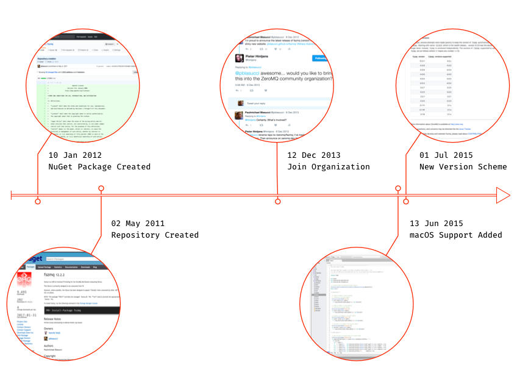
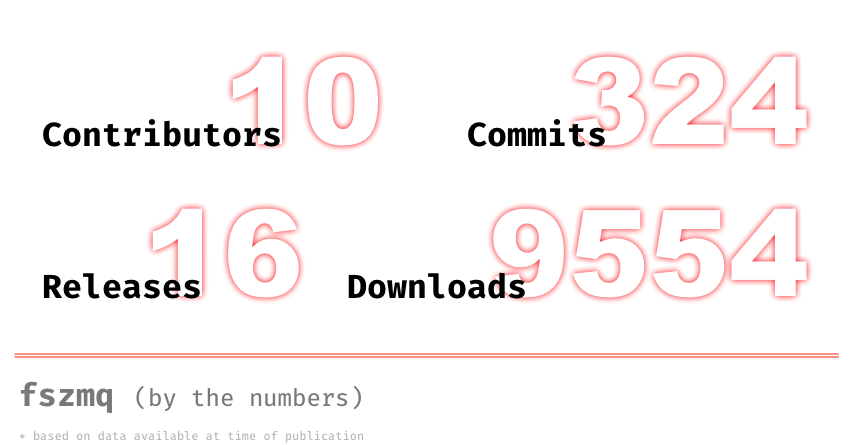

Today marks fszmq's seventh birthday. Or maybe call it an anniversary? Very technically, the library's a few weeks older than this. But seven years ago -- on 2 May 2011 -- I put the source code on GitHub.com, which officially introduced the project to the world. In observance of this milestone, I thought I'd talk a little about its origins, what I've learned over the years, and speculate a bit on what the future might hold for fszmq.
Waaaaay Back When (in 2011)
To set the stage, let's note that seven years ago I was in NYC, doing front-office development for a hedge fund. Ostensibly, I was building a medium-volume, gray-box trading system. But practically, I spent my time juggling loads of little tools needed for various business functions. And it had become painfully clear that we needed a better way of getting various services to coordinate. HTTP had too much overhead. WCF was too... well, WCF -- with all the over-engineered pains one might expect. So we looked at various pieces of middle-ware. The big servers (MQSeries, TIBCO, et cetera) were well out of scope, due to time and budget constraints. The more approachable products (MSMQ, NServiceBus, et cetera) raised more than few performance and maintenance concerns. Then, one day, a colleague of mine mentioned a buddy of his (at another hedge fund) raved about a new tool they were using for high-frequency trading systems: ZeroMQ. In need of a solution, I took ZeroMQ for a test drive. I was very impressed by the speed, the flexibility and relative simplicity of the API, and the superb support. I was sold on a light-weight, decentralized messaging library. The only catch? I was not enjoying a return to C/C++ code. Fortunately, I had enough use-cases, with sufficient latency/throughout tolerance, that a managed wrapper was feasible. In fact, there was even a nascent version of a (now defunct) C# wrapper for libzmq (the native C library which serves at the canonical implementation of the ZMT protocol). However, the wrapper was buggy. And it had a fairly clumsy, poorly documented API. And was not receiving much support. So, rather than run back to C/C++, I decided to build my own wrapper. And because I was so taken by F# (at that point, I'd been using it for 4 years -- 2 casually and then 2 professionally), I decided to put its P/Invoke support to the test. My initial results were solid. So, I put the work out on GitHub. Thus, fs-zmq (note the hyphen -- now a long-forgotten vestige) came into existence, born out of equal parts need and curiosity.
Fast forward seven years. I think the library has held up fairly well. Certainly, it's seen regular production use in a few different companies, both in and out of the financial sector. It's also moved from my personal project to being part of the ZeroMQ organization. And it has received love and attention from nearly a dozen contributors over the years.
The Good Parts of fszmq
Context, Socket, and Message. Each of these loosely follows the same pattern. A core type (Socket, et cetera) is primarily concerned with managing native memory safely and efficiently. I say "primarily" because the Context type is a little bit... well, special. In addition to managing its own native memory, a Context instance also tracks Socket instances so it may participate in program termination. This is unfortunately needed to get clean shutdown semantics (and is a long-standing pain point for wrappers of libzmq). Socket and Message instances, however, truly are only focused on allocating and releasing their own native memory. Meanwhile, the operations which define the meat of fszmq are all stateless functions which take an instance of a core type, e.g. Message (which is treated as an opaque token). This separation of data from behavior leads to a few interesting consequences. It aligns very closely to the underlying C API, reducing cognitive load. It also means adding individual behaviors is more isolated (and thus, testable). It also helps to increase the composability of certain workflows. If you think this sounds vaguely like the "abstract data type" pattern, you're not wrong. The overall design is inspired by it. Although, it may be argued that fszmq deviates in some ways. At any rate, I've previously written a more detailed review (in case you're interested).There are two other aspects of the API which I feel are worth noting: cross-language support and documentation. There is an explicit effort throughout the code base to present a friendly and usable interface to non-F# consumers. I've written more generally about F# API design elsewhere. But, for fszmq this means several things:
- Operational functions often serve "double duty" as extension methods, so as to appear like instance methods in C#.
- In some places, additional overloads are given to convert between F#-centric types and more common BCL types.
CompiledNameAttributeis applied -- judiciously -- to help ensure discoverability when callers navigate the API.- An assembly-level
ExtensionAttributeis emitted so that VB will properly detect extension methods, offering consumers in that language another possible means of expression.
Finally, I've always been impressed with the amount of genuinely useful documentation produced for libzmq. And I'm pleased that fszmq has tried to achieve something similar. Originally, this meant contributing to the ZGuide, an in-depth multi-language tour of ZeroMQ. However, in recent years, it has come to mean having comprehensive API documentation and instructional examples hosted along-side the actual fszmq repository.
The Not-So-Good Parts of fszmq
Of course, all libraries have warts, and fszmq is no exception. Seven years on, the API is showing its age in a few places. Additionally, there are a few things I'd do rather differently (if only I knew then what I know now). What follows is a partial airing of grievances, in rough order of how badly things irk me. Hopefully, not all of them have calcified to the point of permanence (but most of them have).I should've (somehow) automated the code for getting and setting options on the core types -- especially on Socket instances. It's not particularly complicated code. But it's tedious. And requires tweaking every time libzmq adds or deprecates an option (which is nearly every release). Ideally, I'd handle it with a type provider. But barring that (since they didn't exist when I first started fszmq), I should've made code generation part of the build process (T4, GSL, et cetera).
Errors are a normal part of software development. But fszmq could handle them a lot better. There are several places where monadic error handling (i.e. railway-oriented programming) would enable much simpler and more composable workflows. There are also some places where errors really ought to be flat out swallowed. In these cases, it's entire possible to anticipate and adapt. Finally, even in the places where raising an exception is the best course of action, fszmq could do better. Most times the underlying (native) error is just "passed through". Encoding these errors into meaningful sub-classes of System.Exception (with any relevant meta-data) would provide a much better experience for consumers.
The polling API is too cumbersome. Polling is an essential technique in real-world applications. Yet the fszmq API -- despite being reactive -- feels very clunky. It requires complex mutable state management and closures in all but the simplest of scenarios. Now, admittedly, at least receiving scenarios can use tryPollInput (or TryGetInput, depending on the programming language). But even there you have a bit of overhead and no way to tune Message instance allocations.
Finally, how many custom operators is too many? In the case of fszmq -- all of them! There's no need for any of them. They just confuse things and add more surface area to maintain.
Looking beyond 2017
So what's next for fszmq? Well, there's the usual tinkering (bug patching, keeping up with changes to libzmq, et cetera). But I've also begun producing content for an on-line video-based training course, which aims to get C# developers quickly building distributed solutions with ZeroMQ. There are also definite plans to further extend the documentation based on some community feedback. And I've begun work on adding a limited amount of integration between fszmq and F#'s async workflows. Also, some early-stage (mostly experimental) work was recently begun to make fszmq run on .NET Core. But really, I'm hoping to grow the contributors to fszmq. So why not check out the issue tracker and hack something up? Or at the very least, leave a suggestion for anything you think needs to be added or addressed in the library. I want to here from you!
Anyway, thanks for reading. And here's to another seven years!
In Memoriam: Pieter Hintjens (3 December 1962 – 4 October 2016)
Nothing I've done with fszmq would've been possible without the vision and encouragement of Pieter. I'm honored to have collaborated (however briefly) with him. And no one I've met in my 18-year career has had a greater impact on my work -- or my world view. I consider him a teacher. Hopefully, I have been and continue to be a worthy student.